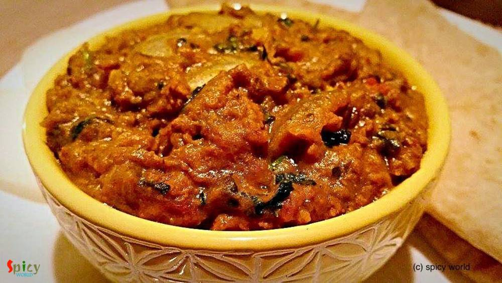

Simple and Easy Recipes
Posts on 'keema'

Nonveg Recipe
Jan 31, 2019
Mughlai Keema Paratha is a very famous street food which has another name Keema Baida Roti. In Kolkata we call them 'moglai porota'. I made these parathas exactly like street style with minced meat, but you can skip that Keema part and keep the rest of the recipe same. The process is a bit lengthy but it is worth trying. I made dry potato curry along with mughlai paratha because these two goes ver ...


Nonveg Recipe
May 23, 2016
Last week I was thinking that my blog doesn't have the recipe of 'mangsher ghugni' and being a Bengali I felt very awkward. There is no Bengali in the world who doesn't know about this dish ... yes, 'mutton ghugni' is that much famous. On special occasions or guest's arrival in evening, 'mangsher ghugni' is a very common item we Bengalis make. It's a Indian version of 'chili'. We make the curry of ...

Nonveg Recipe
Jul 18, 2018
This dish was invented in dhabas from Himachal Pradesh. Nowadays it is available in almost every dhaba and restaurant. Its a very different recipe as it requires mutton pieces along with some minced mutton. Can you imagine that whenever you will scoop up some gravy with naan or roti there will be loads of Keema .... how delicious that sounds ! This dish goes best with Biriyani, Pulao and Butter na ...

Nonveg Recipe
Jun 22, 2016
'Keema Aloo' is my favourite curry when it comes to a fuss free but yummy dinner. It's so rich and spicy that there is no other meat curry which you can make in such a less time. I used mutton keema but feel free to use chicken mince. After adding the cubed potatoes, this dish becomes a killer ! Serve this with plain rice or paratha, every time 'keema aloo' will be a hit. It is also a very good ma ...
")
Nonveg Recipe
Jun 14, 2016
Who doesn't crave for yummy snacks in the evening with some cold drinks during summer ?? I guess everybody does. Summer or winter doesn't matter ... weekend evenings are meant for some awesome starters ! After few trials I finally created the exact taste of Kolkata's one of the famous street food - 'kobiraji cutlet'. Kobiraji means coverage or lace like texture, which you can create with beaten eg ...

Nonveg Recipe
Apr 26, 2016
Don't know about you, but I love 'keema' / mince form of meat. I have already posted so many recipes on 'keema' and this time I made paratha with mince chicken. The authentic recipe calls for 'mutton keema' but didn't have it that time, so made it with chicken and the parathas came out perfectly fine. These breads can be enjoyed with pickle, raita or any type of gravy. The recipe is very simple bu ...

Nonveg Recipe
Mar 31, 2016
In India "biriyani" is a very popular dish and we both are crazy about any type of 'biriyani'. You can find plenty of variations in biriyani. The process is a little bit of lengthy but the result is unbelievable. Last friday I took an attempt on making Keema Biriyani, after the entire process I realized it is the easiest one. That is why I am sharing this recipe with you because it is one of the t ...

Nonveg Recipe
Mar 28, 2016
Obviously they are not our regular 'aloor chop' / aloo tikki, they are something very special, aloo tikkis are stuffed with spicy minced meat, a little different from usual, but they tastes million bucks !! We Bengalis generally eat 'aloor chop' with puffed rice or tea whereas in other parts of India 'aloo tikki' is always served with chutneys. I will recommend you the second one for these stuffed ...

Nonveg Recipe
Oct 15, 2015
In India 'dhaba' means roadside food joints. They offer delicious and spicy meals. Among all of their meals, 'tarka-roti' is the famous one. I once ate 'Mutton Tarka' from them and it was super tasty. Last week I try this tarka recipe and reveal that it tastes exactly like 'dhaba tarka'. Just follow the recipe and impress your family.